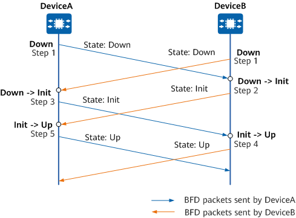

Understanding BFD
Fundamentals
A BFD session is established on two network devices to monitor bidirectional forwarding paths between them and serve an upper-layer application. BFD does not provide a neighbor discovery mechanism. Instead, BFD obtains neighbor information from the upper-layer application it serves for session setup. After the BFD session is set up, devices periodically send BFD packets. If a device does not receive a response within a specified detection period, the device considers the forwarding path faulty. BFD will then notify the upper-layer application for processing. The following uses association between OSPF and BFD as an example to describe the BFD session setup process.
On a simple network as shown in Figure 1, OSPF and BFD are configured on DeviceA and DeviceB. A BFD session is set up as follows:
OSPF uses the Hello mechanism to discover neighbors and establishes a neighbor relationship.
OSPF notifies BFD of neighbor information including source and destination addresses.
BFD sets up a BFD session based on the received neighbor information.
After the BFD session is set up, BFD starts to detect and rapidly responds to link faults.
On the network shown in Figure 2:
The monitored link fails.
BFD quickly detects the link down event and changes the BFD session state to down.
BFD notifies the local OSPF process that the BFD neighbor is unreachable.
The local OSPF process ends the OSPF neighbor relationship.
BFD Detection Mechanism
Two systems establish a BFD session and periodically send BFD Control packets along the path between them. If one system does not receive BFD Control packets within a specified period, the system considers the path faulty.
BFD Control packets are encapsulated into UDP packets for transmission. In the initial phase of a BFD session, both systems negotiate BFD parameters with each other using BFD Control packets. These parameters include discriminators, desired minimum intervals for sending and receiving BFD Control packets, and local BFD session status. After the negotiation succeeds, BFD Control packets are transmitted along the path at the negotiated interval.
BFD mainly works in asynchronous mode. In this mode, both systems periodically send BFD Control packets to each other. If one system consecutively fails to receive BFD Control packets, the system considers the BFD session down.
Types of Links Monitored by BFD
Link Type |
Sub-Type |
Description |
|---|---|---|
IP |
|
If a physical Ethernet interface has multiple sub-interfaces, separate BFD sessions can be established on the physical Ethernet interface and its sub-interfaces. |
Eth-Trunk |
|
Separate BFD sessions can be established to detect link faults on an Eth-Trunk interface and its member interfaces at the same time. |
VLANIF |
|
Separate BFD sessions can be established to monitor a VLANIF interface and VLAN member interfaces at the same time. |
BFD Packet
Figure 3 describes the format of a BFD packet. Table 2 describes the fields in a BFD packet.
Field |
Length |
Meaning |
|---|---|---|
Vers (Version) |
3 bits |
BFD version number. The current version number is 1. |
Diag (Diagnostic) |
5 bits |
Diagnostic word, which indicates the cause of the last session status change of the local BFD system:
|
Sta (State) |
2 bits |
Local BFD status:
|
P (Poll) |
1 bit |
Whether the transmitting system requests verification of connectivity or of a parameter change:
|
F (Final) |
1 bit |
Whether the transmitting system responds to a received BFD packet with the P bit set to 1:
|
C (Control Plane Independent) |
1 bit |
Whether the forwarding plane is separate from the control plane:
|
A (Authentication Present) |
1 bit |
Whether authentication is performed for a BFD session:
|
D (Demand) |
1 bit |
Whether demand mode is used:
|
M (Multipoint) |
1 bit |
This bit is reserved for BFD to support P2MP extensions in the future. |
Detect Mult |
8 bits |
Detection timeout multiplier, used by the detecting party to calculate the detection timeout duration:
|
Length |
8 bits |
Packet length, in bytes. |
My Discriminator |
32 bits |
Local discriminator of a BFD session. It is a unique non-zero value generated by the transmitting system. Local discriminators are used to distinguish multiple BFD sessions in a system. |
Your Discriminator |
32 bits |
Remote discriminator of a BFD session:
|
Desired Min TX Interval |
32 bits |
Minimum supported local interval (in milliseconds) for sending BFD packets. |
Required Min RX Interval |
32 bits |
Minimum supported local interval (in milliseconds) for receiving BFD packets. |
Required Min Echo RX Interval |
32 bits |
Minimum supported local interval (in milliseconds) for receiving Echo packets. Value 0 indicates that the local system does not support the Echo function. |
BFD Session Setup Modes
BFD sessions can be set up in either static or dynamic mode, as described in Table 3. The two modes differ in the way local (My Discriminator) and remote (Your Discriminator) discriminators are configured.
BFD Session Setup Mode |
Description |
|---|---|
Static BFD session |
|
Dynamic BFD session |
BFD session setup is dynamically triggered by routing protocols. The local discriminator is dynamically allocated, and the remote discriminator is obtained from BFD packets sent by the peer. After establishing a new neighbor relationship, a routing protocol notifies BFD of the neighbor relationship and detection parameters (including destination and source addresses), and then BFD sets up a session based on the received parameters. When a fault occurs on the link, the routing protocol associated with BFD can quickly detect the BFD session down event. Traffic is then switched to the backup link immediately to minimize data loss. Dynamic BFD is used on networks that require high reliability. When a BFD session is set up dynamically, the system processes the local and remote discriminators as follows:
NOTE:
Dynamic BFD is applicable to BFD for BGP, BFD for IS-IS, BFD for OSPF, and BFD for RIP. For details about how to configure dynamic BFD, see description of each dynamic routing protocol. |
BFD Session Management
A BFD session has the following states:
Down: A BFD session is in the Down state or has just been set up.
Init: The local system can communicate with the remote system and expects the BFD session to go up.
Up: A BFD session has been successfully set up.
AdminDown: A BFD session has been brought down for administrative purposes.
The BFD session state is carried in the State field of a BFD packet. The local system updates the session state according to the local session state and the received session state of the remote system. The BFD state machine implements a three-way handshake for BFD session setup or teardown to ensure that the two systems both detect the state changes. The following uses BFD session setup as an example to describe state changes of the BFD state machine.

DeviceA and DeviceB start their respective BFD state machines. The initial state of the BFD state machines is Down. DeviceA and DeviceB send BFD packets with the State field set to Down. For a static BFD session, the value of Your Discriminator in a BFD packet is specified manually. For a dynamic BFD session, the value of Your Discriminator is 0.
After receiving a BFD packet with the status being down and learning the Your Discriminator value, DeviceB switches the BFD session status to Init and sends a BFD packet with the status being Init.

After the local BFD session state of DeviceB changes to Init, DeviceB no longer processes received BFD packets with the State field set to Down.
The BFD status change on DeviceA is the same as that on DeviceB. After receiving a BFD packet with the status being down and learning the Your Discriminator value, DeviceA sends a BFD packet with the status being Init to DeviceB.
After receiving a BFD packet with the State field set to Init, DeviceB changes the local session state to Up.
The BFD session state change on DeviceA is the same as that on DeviceB.